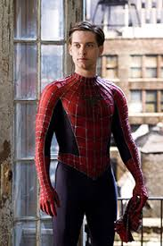
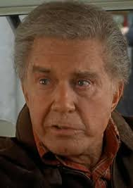

Peter Parker
Peter Parker is the hero known as Spider-Man. After being bitten by a radioactive spider, he gained amazing powers. He uses these abilities to protect New York City and help others.

Peter Parker is the hero known as Spider-Man. After being bitten by a radioactive spider, he gained amazing powers. He uses these abilities to protect New York City and help others.

Aunt May raised Peter after his parents passed away. She is kind, caring, and always supports Peter even when life becomes difficult. She reminds Peter to always do the right thing.

Uncle Ben played an important role in Peter's life. His famous advice, "With great power comes great responsibility," inspired Peter to become a hero and protect people.